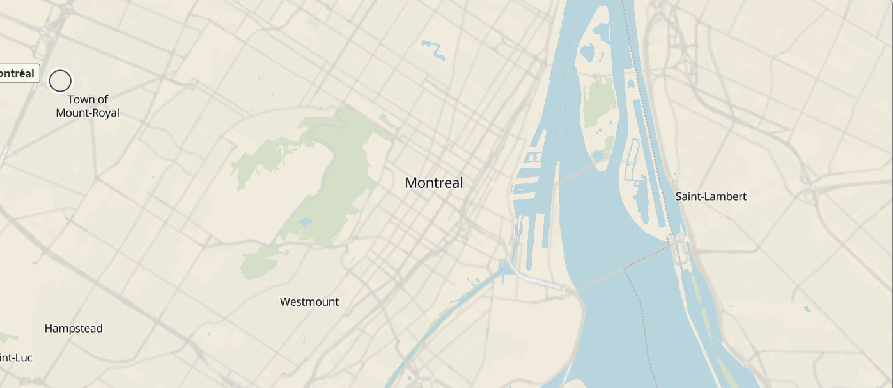
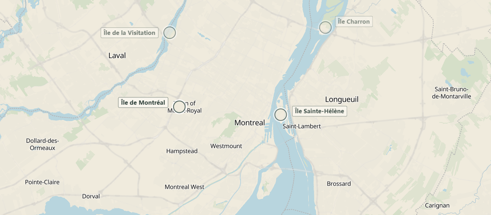
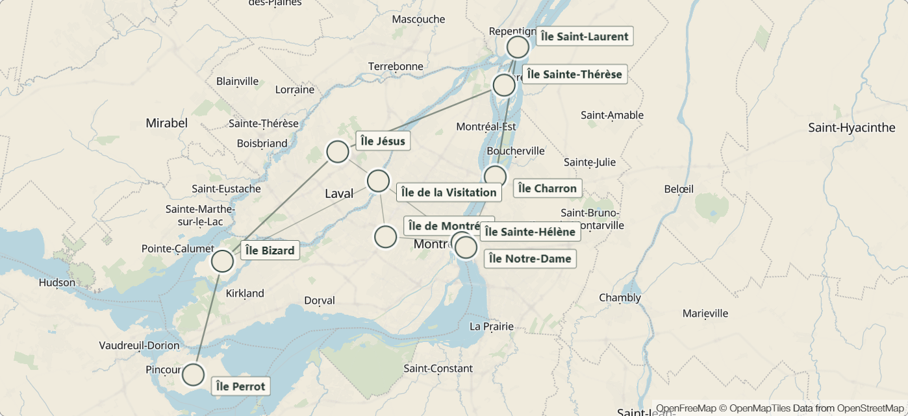
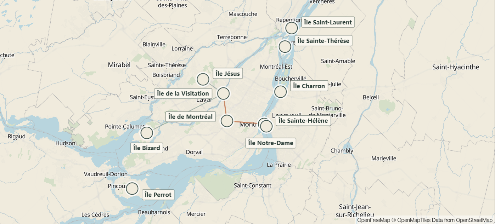
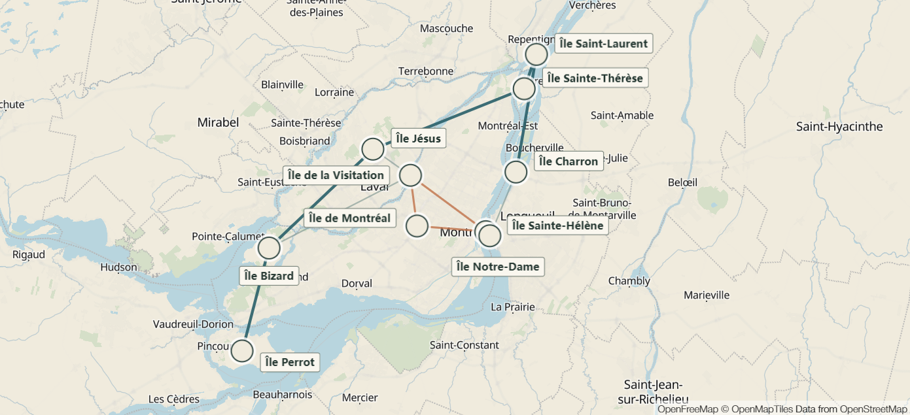

Design Journal
Week 5
Design Journal
Junming He
Hochelaga Archipelago
October 20, 2026
What I Worked On
This week, I mainly focused on developing and refining the opening animation for the Hochelaga Archipelago interactive map. My goal was to create a gradual introduction that helps visitors get a basic sense of the scale of the Hochelaga Archipelago, while also showing that the islands are not isolated places, but part of a larger connected system.
Since other group members are currently working on the main exploration interface and the individual island detail pages, I focused on turning the opening into a relatively independent animation sequence that can eventually lead users into the rest of the project.
I also wanted to use this animation prototype in next week’s meeting. Compared with the static prototypes from the previous weeks, this version can show the zooming, island markers, connections, and information reveal much more clearly. It should also make it easier for us to discuss with the client whether the current direction matches what they have in mind.
Choosing the Map Style
I started developing the opening sequence based on the UX ideas I had explored earlier. For the map style, I chose to use a more realistic map background instead of a fully abstract or illustrated one. I want users to immediately understand that the project is based on a real geographic place rather than feeling like a fictional visual piece. I chose Montréal as the first focus point of the opening. Montréal is part of the Hochelaga Archipelago, but it is also a place that visitors are more likely to recognize. Instead of starting with the whole archipelago, I thought it would be clearer to begin with Montréal and gradually zoom out. This gives users a familiar geographic reference before the scale of the map expands.

Choosing the Islands
At first, I considered placing all 200+ islands on the map. I hoped that the large number of islands would help visitors understand the scale of the Hochelaga Archipelago. However, after testing this idea, I quickly decided not to use it. When too many island markers appeared on the map at the same time, the screen became crowded. As the map zoomed out, many nearby islands also started to overlap. Instead of making the scale easier to understand, it created more visual noise. Because of this, I changed the approach and selected only a smaller group of representative islands. I included a few islands farther away from Montréal, as well as some closer to the center. This keeps the map more readable while still giving users a sense of the overall size of the archipelago. This choice also works better for the connection animation. If too many islands were shown at once, the number of connection lines would quickly become too dense and the final network could become difficult to read.

Connection Effect
Since one of the main ideas of our project is to show the connections within the Hochelaga Archipelago, I wanted the opening to give visitors an early impression that these islands are not completely separate from one another. My approach was to gradually draw lines between the island points until they form a network. Compared with the previous static prototype, the animated version makes it easier to see the network forming over time. I think this is easier to understand than showing the complete network immediately, and it also creates a stronger visual effect. However, whether this works as intended will still depend on the feedback we get from the client next week. The connection effect went through several adjustments during development. In the first version, the lines only varied in thickness, which made the result feel quite flat. Later, I added different colors to make the network visually richer and to prevent all the lines from blending together too much. I also adjusted the zoom level several times. If the map zoomed out too far, Montréal and the island locations became harder to recognize. If it did not zoom out enough, some of the outer islands could not be shown at the same time. I had to find a balance between showing a large enough geographic area and keeping the map readable.



Text and Exploration Button
After the connection animation is complete, the title and supporting text gradually appear to explain what the map and animation cannot fully communicate on their own. Because the map only shows a selection of islands, the visual alone is not enough to explain what the Hochelaga Archipelago is. At the end, I added the title “The Hochelaga Archipelago” together with the short introduction:
“Discover the islands and waterways surrounding Montréal. Explore their landscapes and uncover the stories that connect them.”
This text helps explain what users will be exploring next. The text does not try to explain exactly what every connection line represents. Instead, it gives users a simple idea that the islands and waterways are not completely separate, and that there are stories and connections between them that can be explored further in the interactive map. I also did not want all of the information and the button to appear at once. Instead, the sequence is designed so that users first see the map zoom out and the connection animation, then the title and introduction appear, and finally the “Explore the Archipelago” button is shown. The viewing order I am aiming for is:
Map zoom-out → Island connections → Title and introduction → Explore the Archipelago
I decided to show the button last because I want users to first get a basic impression of the Hochelaga Archipelago before moving into the main map. If the button appeared too early, some users might skip the opening animation and miss the main idea it is trying to introduce.
Next Step
My next step is to show this animation prototype to my group members and the client during the next meeting. I mainly want to find out whether the current opening sequence clearly communicates the scale of the Hochelaga Archipelago and the idea of connection. We also need to discuss whether the transition between the opening and the main exploration interface feels natural, and whether the current visual style fits the overall project. Based on the feedback, I can continue adjusting the animation timing, map style, connection effect, or text content.